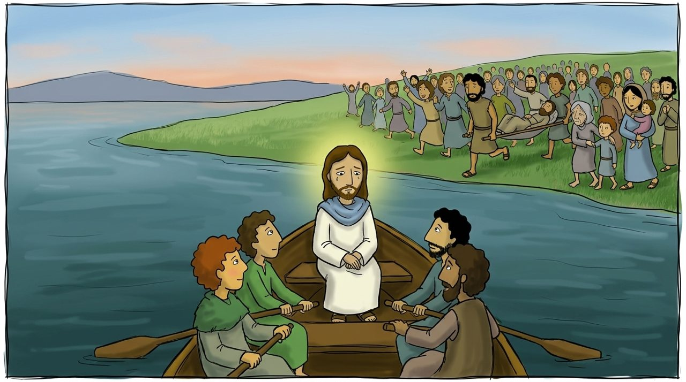

Səhnə 1 · Matta 14:1–14
Sakit yerə
İsa Vəftizçi Yəhyanın Hirod padşah üzündən öldürüldüyü kədərli xəbəri eşitdi. O, qayığa minib sakit bir yerə getdi.
Amma çoxlu insan piyada Onun ardınca gəldi. İsa onları görüb və xəstələrə şəfa verdi.